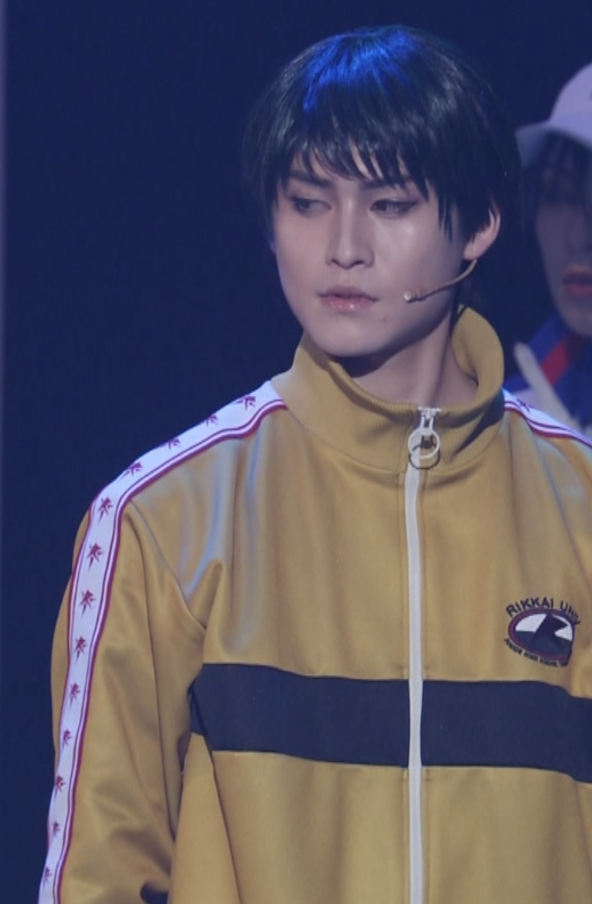

【Player: Yanagi Renji｜柳蓮二】

身長：182cm 体重：67kg 利き腕：右
足のサイズ：26cm 視力：右0.8 左0.8
プレイスタイル：カウンターパンチャー
メーカー：
シューズ：DIADORA / rebound ace DA2 (128076･ED784)
ラケット：VOLKL / catapult V1 mid plus
総合評価：
スピード 3 / パワー 3 / スタミナ 3 / メンタル 4 / テクニック 5 / 合計 15
■ 技術研究ログ
観察記録と資料画像をもとに、技術的傾向と動作、影響範囲を分析・記述。
- - かまいたち
- - 癖・兆候
※技詳細は記載なし（renji）